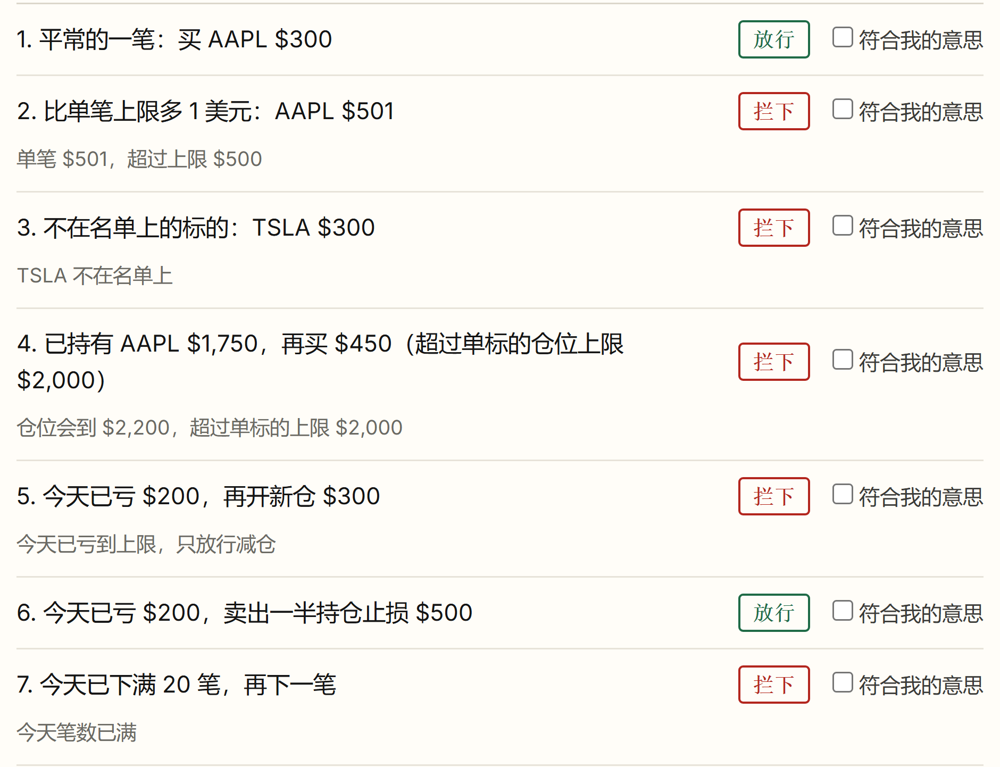
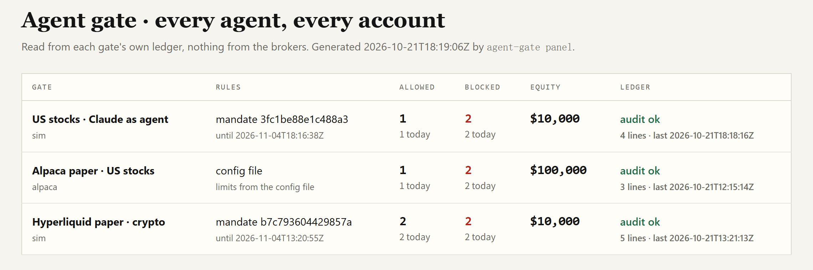
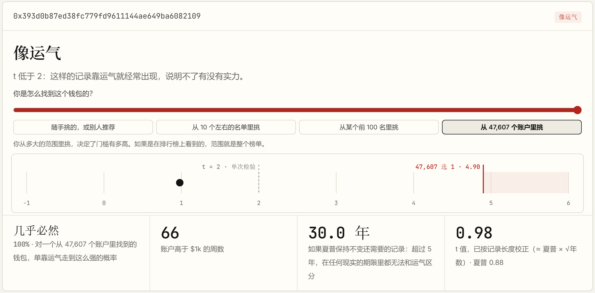

<!doctype html>
<html lang="zh-Hans">
<head>
<meta charset="utf-8">
<meta name="viewport" content="width=device-width,initial-scale=1">
<title>AI 替你下单之前（v10） · Evidence Deflator</title>
<link rel="preconnect" href="https://fonts.googleapis.com"><link rel="preconnect" href="https://fonts.gstatic.com" crossorigin>
<link href="https://fonts.googleapis.com/css2?family=Noto+Sans+SC:wght@400;500;700;900&family=JetBrains+Mono:wght@500;700;800&display=swap" rel="stylesheet">
<style>
/* v10: same keynote ground as v9 (black, white, one red); one story: problem -> the gate -> signed limits -> what we found -> why it must be yours -> ask.
   Content sits in the top ~77% of the frame and away from the edges (LED wall, heads in front). Numbers in mono. */
:root{--bg:#050505;--ink:#F3F3F1;--mid:#A3A3A0;--low:#6B6B68;--red:#FF4B3E;--line:#262626;--mono:'JetBrains Mono',Consolas,monospace}
*{margin:0;padding:0;box-sizing:border-box}
html,body{height:100%}
body{background:var(--bg);color:var(--ink);font-family:'Noto Sans SC','PingFang SC','Microsoft YaHei',sans-serif;overflow:hidden;-webkit-font-smoothing:antialiased}
nav{position:fixed;top:14px;right:24px;display:flex;gap:4px;z-index:3}
nav button{font:12px Consolas,monospace;color:var(--low);background:none;border:0;padding:4px 6px;cursor:pointer}
nav button.on{color:var(--ink)}
footer{position:fixed;left:80px;bottom:26px;font-size:18px;color:var(--low);letter-spacing:.04em}
main{height:76.9%;display:flex;zoom:1.3}
.slide{display:none;flex:1;padding:50px 62px 0;flex-direction:column;justify-content:flex-start}
.slide.on{display:flex;animation:in .4s ease both}
.static .slide.on{animation:none}.static nav{display:none}
@keyframes in{from{opacity:0}to{opacity:1}}
h1{font-size:84px;font-weight:900;line-height:1.18;letter-spacing:-.01em}
h2{font-size:62px;font-weight:900;line-height:1.2;letter-spacing:-.01em}
.lede{font-size:30px;color:var(--mid);margin-top:22px;line-height:1.5;font-weight:500}
.lede b{color:var(--ink);font-weight:700}
.red{color:var(--red)}.mid{color:var(--mid)}
.m{font-family:var(--mono);font-weight:700;letter-spacing:-.01em}
.src{font-size:13px;color:var(--low);margin-top:24px;line-height:1.6}
/* 00 */
.cover{padding-top:96px}
.cover .sub{font-size:34px;color:var(--mid);margin-top:30px;font-weight:500}
.cover .who{margin-top:64px;font-size:26px;color:var(--mid)}.cover .who b{color:var(--ink);font-weight:700;margin-right:18px}
/* 01 */
.huge{font-size:280px;font-weight:900;line-height:.95;letter-spacing:-.04em;margin-top:4px}
.huge small{font-size:86px;letter-spacing:0;margin-left:10px}
.but{margin-top:34px;font-size:40px;font-weight:700;line-height:1.4}
.but span{color:var(--mid);font-weight:500}
/* 02 the refusal, as ledger lines */
.tape{margin-top:46px;border-top:1px solid var(--line)}
.tape .row{display:grid;grid-template-columns:150px 440px 1fr;align-items:baseline;gap:30px;padding:26px 0;border-bottom:1px solid var(--line)}
.tape .t{font:500 22px var(--mono);color:var(--low)}
.tape .o{font:800 46px var(--mono);letter-spacing:-.02em}
.tape .d{font-size:30px;color:var(--mid)}
.tape .d b{font:800 46px var(--mono);margin-right:22px}
.tape .blk .o,.tape .blk .d b{color:var(--red)}
.tape .ok .d b{color:var(--ink)}
.said{margin-top:40px;font-size:30px;line-height:1.5;color:var(--mid);border-left:4px solid var(--red);padding-left:24px;max-width:1500px}
.said b{color:var(--ink)}
/* 03 signed limits */
.two{display:grid;grid-template-columns:1.05fr 1fr;gap:70px;margin-top:40px;align-items:start}
.doc{font:500 24px/1.75 var(--mono);color:var(--mid);border:1px solid var(--line);padding:28px 32px;border-radius:6px;background:#0C0C0C}
.doc b{color:var(--ink);font-weight:700}.doc .k{color:var(--low)}.doc .sig{color:var(--red)}
.pts{list-style:none}
.pts li{font-size:32px;line-height:1.45;padding:0 0 30px;font-weight:500;color:var(--mid)}
.pts li b{display:block;color:var(--ink);font-size:40px;font-weight:900;margin-bottom:6px}
/* 04 stress test */
.bars{margin-top:46px;max-width:1700px}
.bar{display:grid;grid-template-columns:520px 1fr;align-items:center;gap:28px;margin-bottom:30px}
.bar .lab{font-size:27px;color:var(--mid);line-height:1.35;text-align:right}.bar .lab b{color:var(--ink)}
.bar .track{position:relative;height:74px;display:flex;align-items:center}
.bar .fill{height:100%;background:#2A2A2A}
.bar.hot .fill{background:var(--red)}
.bar .v{font:800 46px var(--mono);margin-left:20px;white-space:nowrap}
.bar.hot .v{position:absolute;right:22px;color:#050505}
.so{margin-top:18px;font-size:34px;font-weight:700}.so span{color:var(--mid);font-weight:500}
/* 05 why yours */
.vs{display:grid;grid-template-columns:1fr 1fr;gap:0;margin-top:50px;border-top:1px solid var(--line)}
.vs div{padding:30px 40px 30px 0}
.vs div+div{padding-left:40px;border-left:1px solid var(--line)}
.vs h3{font-size:30px;color:var(--low);font-weight:500;margin-bottom:22px}
.vs p{font-size:34px;line-height:1.5;font-weight:500;color:var(--mid);margin-bottom:14px}
.vs .ours p{color:var(--ink);font-weight:700}
.vs .ours h3{color:var(--red)}
.now{margin-top:30px;font-size:26px;color:var(--mid)}.now b{color:var(--ink)}
/* 03 */
.two.wide{grid-template-columns:.62fr 1fr;gap:56px}
.two.wide .shot img{max-height:520px;width:auto;max-width:100%}
.say{font-size:34px;line-height:1.5;font-weight:700}
.say .k{display:block;font-size:24px;color:var(--low);font-weight:500;margin:22px 0 8px}
.say .k:first-child{margin-top:0}
.say .k+.k{margin-top:14px}
.exs{border-top:1px solid var(--line)}
.exs .k{display:block;font-size:24px;color:var(--low);margin:0 0 6px}
.exs .k:last-child{margin:22px 0 0}
.ex{display:flex;justify-content:space-between;align-items:baseline;gap:20px;padding:20px 0;border-bottom:1px solid var(--line);font-size:34px;font-weight:500;color:var(--mid)}
.ex b{color:var(--ink);font-family:var(--mono);font-weight:800}
.ex i{font-style:normal;font-size:34px;font-weight:900}.ex .no{color:var(--red)}.ex .ok{color:var(--ink)}
/* 03 screenshot */
.shot img{display:block;width:100%;border:1px solid var(--line);border-radius:6px}
/* 05 roadmap */
.road{display:grid;grid-template-columns:1fr 1fr 1.25fr;margin-top:40px;border-top:1px solid var(--line)}
.road div{padding:26px 34px 10px 0}
.road div+div{padding-left:34px;border-left:1px solid var(--line)}
.road h3{font-size:26px;color:var(--red);font-weight:500;margin-bottom:18px}
.road .live h3{color:var(--red)}
.road p{font-size:28px;line-height:1.4;font-weight:700;color:var(--ink);margin-bottom:14px}
.road .live p{color:var(--ink);font-weight:700}
.why{margin-top:26px;font-size:24px;color:var(--mid)}.why b{color:var(--ink)}
/* 05 duo */
.duo{display:grid;grid-template-columns:1fr 1fr;gap:44px;margin-top:34px;align-items:start}
.duo figure{margin:0}
.duo img{display:block;width:100%;border-radius:6px;border:1px solid var(--line)}
.duo figcaption{margin-top:16px;font-size:26px;color:var(--mid);line-height:1.45}
.duo figcaption b{display:block;color:var(--red);font-size:26px;font-weight:700;margin-bottom:2px}
/* 06 ask */
.ask{display:grid;grid-template-columns:1fr auto;gap:60px;align-items:start}
.ask ul{list-style:none;margin-top:44px;font-size:32px;line-height:1.5;color:var(--mid)}
.ask li{margin-top:18px}.ask li b{color:var(--ink)}
.try{display:flex;align-items:center;gap:32px;margin-top:56px}
.try .qr svg{width:200px;height:200px;margin:0}
.try b{display:block;font-size:30px;color:var(--ink);font-weight:900}.try span{font-size:34px;color:var(--mid)}
.qr.big{font-size:22px;color:var(--mid);line-height:1.6}.qr.big b{display:block;font-size:30px;color:var(--ink);margin-bottom:2px}
.qr{text-align:center;font-size:18px;color:var(--mid)}
.qr svg,.qr img{display:block;width:260px;height:260px;margin:0 auto 12px;background:#fff;padding:12px}
.qr.big svg,.qr.big img{width:400px;height:400px;margin-bottom:20px}
</style>
</head>
<body>
<nav id="nav"></nav>
<main id="stage"></main>
<footer>evidencedeflator.com</footer>
<script>
// v10 (2026-10-22). Script and sources: OneDrive/桌面/创业_dc/澳门路演_v10_讲稿_1022.md
const QR='<svg width="148" height="148" viewBox="0 0 148 148" class="segno"><g transform="scale(4)"><path fill="#fff" d="M0 0h37v37h-37z"/><path class="qrline" stroke="#17171b" d="M4 4.5h7m2 0h3m1 0h3m2 0h1m3 0h7m-29 1h1m5 0h1m1 0h5m2 0h1m1 0h1m4 0h1m5 0h1m-29 1h1m1 0h3m1 0h1m1 0h1m1 0h1m3 0h1m1 0h1m3 0h1m1 0h1m1 0h3m1 0h1m-29 1h1m1 0h3m1 0h1m1 0h1m1 0h2m2 0h4m4 0h1m1 0h3m1 0h1m-29 1h1m1 0h3m1 0h1m4 0h5m3 0h2m1 0h1m1 0h3m1 0h1m-29 1h1m5 0h1m2 0h3m1 0h2m2 0h2m1 0h1m1 0h1m5 0h1m-29 1h7m1 0h1m1 0h1m1 0h1m1 0h1m1 0h1m1 0h1m1 0h1m1 0h7m-21 1h1m1 0h4m4 0h1m-19 1h1m5 0h1m1 0h5m1 0h2m1 0h2m2 0h2m2 0h3m-28 1h1m4 0h1m1 0h1m3 0h1m2 0h1m1 0h4m3 0h2m1 0h2m-25 1h2m1 0h1m3 0h2m3 0h3m6 0h1m-25 1h1m1 0h1m1 0h2m2 0h2m1 0h2m1 0h3m1 0h1m1 0h2m1 0h3m-26 1h1m2 0h1m1 0h3m5 0h2m1 0h1m3 0h1m1 0h2m4 0h1m-29 1h2m2 0h2m1 0h1m1 0h2m1 0h4m2 0h3m1 0h3m2 0h2m-28 1h6m1 0h1m2 0h8m3 0h5m-26 1h2m1 0h1m2 0h1m1 0h1m3 0h2m4 0h1m6 0h1m1 0h1m-28 1h2m2 0h2m2 0h1m4 0h2m1 0h1m7 0h2m-27 1h2m1 0h3m2 0h1m1 0h1m1 0h1m2 0h6m1 0h3m1 0h3m-29 1h3m3 0h1m1 0h1m1 0h1m1 0h5m2 0h1m1 0h3m1 0h1m2 0h1m-29 1h1m1 0h4m2 0h4m2 0h1m1 0h1m3 0h5m-25 1h1m1 0h1m2 0h3m1 0h1m2 0h1m2 0h3m2 0h5m1 0h3m-21 1h1m3 0h2m1 0h1m1 0h2m1 0h1m3 0h2m-26 1h7m2 0h1m2 0h5m2 0h2m1 0h1m1 0h3m-27 1h1m5 0h1m2 0h2m1 0h2m5 0h2m3 0h1m3 0h1m-29 1h1m1 0h3m1 0h1m2 0h1m3 0h1m1 0h2m1 0h8m1 0h2m-29 1h1m1 0h3m1 0h1m2 0h2m4 0h4m2 0h1m1 0h1m1 0h2m1 0h1m-29 1h1m1 0h3m1 0h1m2 0h2m1 0h1m1 0h4m1 0h1m1 0h7m-28 1h1m5 0h1m2 0h1m1 0h2m2 0h1m5 0h6m1 0h1m-29 1h7m1 0h2m1 0h1m1 0h3m1 0h1m1 0h1m3 0h2m1 0h1"/></g></svg>';
const S=[
// 00
`<div class="slide cover">
 <h1>AI 替你下单之前，<br>谁来管住它？</h1>
 <div class="sub">给 AI 交易 agent 装一道闸：上限你来签，账本谁都能查</div>
 <div class="who"><b>伯纳德</b>Evidence Deflator 开发者 · 《AI 智能投资手册》第九章作者</div>
</div>`,
// 01
`<div class="slide">
 <div class="huge m">15<small>万</small></div>
 <div class="lede">Robinhood 用户，已经开通了 <b>AI agent 交易账户</b></div>
 <div class="but">「我们不控制、不监督、不推荐、也不审计这些 agent。」<br><span>「agent 下的单，风险全部由你承担。」</span></div>
 <div class="src">出处：Robinhood HOOD Summit 2026 新闻稿（公司自报）。原文：over 150,000 customers have opened agentic trading accounts / Robinhood does not control, supervise, monitor, recommend, or audit agents / You assume all risk for trades executed by AI agents（中文为本项目翻译）</div>
</div>`,
// 02
`<div class="slide">
 <h2>我们在 agent 和券商账户之间，加了一道闸</h2>
 <div class="tape">
  <div class="row ok"><span class="t">18:18:14</span><span class="o">买 AAPL $300</span><span class="d"><b>放行</b>规则之内，模拟成交</span></div>
  <div class="row blk"><span class="t">18:18:15</span><span class="o">买 SPY $5,000</span><span class="d"><b>拦下</b>超过你定的单笔上限 $500</span></div>
  <div class="row blk"><span class="t">18:18:16</span><span class="o">买 TSLA $100</span><span class="d"><b>拦下</b>不在你允许的名单里</span></div>
 </div>
 <div class="said">agent（Claude）被拦下后的回复：<b>「SPY 我不会拆成多笔小单来绕开上限。」</b><br>就算它拆，第 5 笔 $500 也会撞上 $2,000 的仓位上限。</div>
 <div class="src">2026-10-21 真实运行（UTC）：Claude 作 agent，美股模拟盘，价格取同日 Alpaca 成交价；同一套闸门也已在 Alpaca 模拟账户实测。账本与原话：github 仓库 docs/gate/demo-2026-10-21-us</div>
</div>`,
// 03
`<div class="slide">
 <h2>一句话说规则，看例子确认，再签名</h2>
 <div class="two wide">
  <div class="say"><span class="k">你对 agent 说</span>「只做苹果和 SPY，<br>单笔不超过 500 美元，<br>一天最多亏 200 美元……」<span class="k">agent 起草授权，<br>闸门用代码算出右边的例子</span><span class="k">你逐条确认，才能签名</span></div>
  <div class="shot"></div>
 </div>
 <div class="src">2026-10-21 真实运行：Claude 调用闸门的 propose_mandate 起草；例子由代码按授权算出，不由 AI 判断；截图：evidencedeflator.com/gate/sign。记录：docs/gate/demo-2026-10-21-us（测试钥匙签发）</div>
</div>`,
// 04
`<div class="slide">
 <h2>只设「每日亏损上限」，挡不住</h2>
 <div class="bars">
  <div class="bar"><div class="lab">你设的每日亏损上限</div><div class="track"><div class="fill" style="width:3.3%"></div><span class="v">$200</span></div></div>
  <div class="bar hot"><div class="lab"><b>守规矩</b>、把额度用满的 agent<br>最坏那天的亏损（中位数）</div><div class="track"><div class="fill" style="width:100%"></div><span class="v">$6,007</span></div></div>
  <div class="bar"><div class="lab">加上单标的仓位上限 $2,000 后</div><div class="track"><div class="fill" style="width:3.1%"></div><span class="v">$186</span></div></div>
 </div>
 <div class="so">它只拦新开的仓，<span>拦不住持仓越堆越大，30 天能堆到本金约 19 倍。所以加了仓位上限。</span></div>
 <div class="src">本项目压力测试：Hyperliquid BTC/ETH 199 天真实小时收益按日重抽样，闸门自身规则回放，30 天 × 1,000 次，起始 $10,000；单笔 $500、每日 20 笔。小时收盘价，未计强平、资金费、手续费（docs/data/gate-stress-2026-10-21.json）</div>
</div>`,
// 05
`<div class="slide">
 <h2>管住它，还要判它：是本事还是运气</h2>
 <div class="lede">代码谁都能写，<b>可信的记录和公道的评分写不出来</b></div>
 <div class="duo">
  <figure><figcaption><b>闸门</b>每一笔签名入账，第三方拿账本就能复核</figcaption></figure>
  <figure><figcaption><b>尺子</b>Hyperliquid 盈利榜前 100 名，还没有一个证据充分</figcaption></figure>
 </div>
 <div class="why">为什么是现在：6 月 23 日，7 名美国国会议员联名致信 SEC 主席，追问 agent 交易该有什么<b class="red">护栏</b>、出了事谁负责</div>
 <div class="src">左：agent-gate panel，三个闸门的账本（docs/gate/demo-2026-10-21-us/panel.html）。右：evidencedeflator.com 钱包检验，公开数据，按挑选范围定门槛（47,607 选 1，t ≥ 4.90）。国会致信：AdvisorHub 2026-06-26 报道</div>
</div>`,
// 06
`<div class="slide">
 <div class="ask">
  <div><h1>钱交给 AI 之前，<br><span class="red">先给它装一道闸</span></h1>
   <div class="try"><div class="qr">${QR}</div><div><b>体验</b><span>evidencedeflator.com</span></div></div></div>
  <div class="qr big"><b>欢迎交流 AI agent 交易</b>微信 · 伯纳德</div>
 </div>
</div>`
];
const stage=document.getElementById('stage'),nav=document.getElementById('nav');
S.forEach((h,i)=>{const b=document.createElement('button');b.textContent=String(i).padStart(2,'0');b.onclick=()=>go(i);nav.appendChild(b);
 const t=document.createElement('div');t.innerHTML=h.trim();stage.appendChild(t.firstChild);});
if(new URLSearchParams(location.search).has('static'))document.documentElement.classList.add('static');
let cur=-1;
function go(i){if(i<0||i>=S.length||i===cur)return;cur=i;
 [...stage.children].forEach((el,k)=>el.classList.toggle('on',k===i));
 [...nav.children].forEach((el,k)=>el.classList.toggle('on',k===i));}
document.addEventListener('keydown',e=>{
 if(['ArrowRight','PageDown',' '].includes(e.key))go(Math.min(cur+1,S.length-1));
 else if(['ArrowLeft','PageUp'].includes(e.key))go(cur-1);
 else if(/^[0-6]$/.test(e.key))go(+e.key);
});
go(+(new URLSearchParams(location.search).get("s")||0));
function fit(){document.documentElement.style.zoom=Math.min(innerWidth/1920,innerHeight/1080).toFixed(3)}  // scale down too, so a laptop window shows the 1920x1080 layout
addEventListener('resize',fit);fit();
</script>
</body>
</html>
